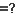
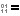
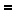

Dans le menu Actions, la commande Comparer les contenus  exécute des comparaisons de contenu dans les deux fichiers sélectionnés afin de déterminer s'ils correspondent.
Méthodes de comparaison de contenu
Comparaison de CRC compare des fichiers en utilisant leurs valeurs CRC.
Comparaison binaire compare des fichiers octet-par-octet.
Comparaison basée sur des règles compare des fichiers en se basant sur leur association de format de fichier. Cela vous permet de définir des différences non importantes telles que des modifications d'espaces blancs, ou des commentaires de code source. Une comparaison basée sur des règles peut aussi ignorer les différences dans l'encodage de fichier ou des fins de ligne.
Résultats des comparaisons de contenu
Les comparaisons CRC et Binaires retournent un de ces résultats :
 |
Binairement identiques |
Les fichiers sont exactement identiques. |
|
Différences binaires |
Au moins un octet est différent entre les fichiers. |
Les comparaisons basées sur des règles ont une comparaison binaire intégrée et retourne un de ces résultats :
Binairement identiques |
Les fichiers sont exactement identiques. |
|
 |
Identiques en se basant sur des règles |
Les fichiers ont des différences binaires, telles que l'encodage de caractère, qui peuvent être ignorées. |
|
Différences non importantes |
Une comparaison basée sur des règles n'a trouvé que des différences non importantes. |
Différences importantes |
Une comparaison basée sur des règles a trouvé des différences importantes. |
Lorsque les comparaisons de contenu sont exécutées
Des comparaisons de contenu sont exécutées :
| • | lorsqu'une session de dossiers est chargée et que ses paramètres de session appellent à des comparaisons automatiques de contenu |
| • | explicitement, lorsque la commande Comparer les contenus est lancée |
| • | lorsqu'un couple de fichiers est ouvert dans une session de fichiers |